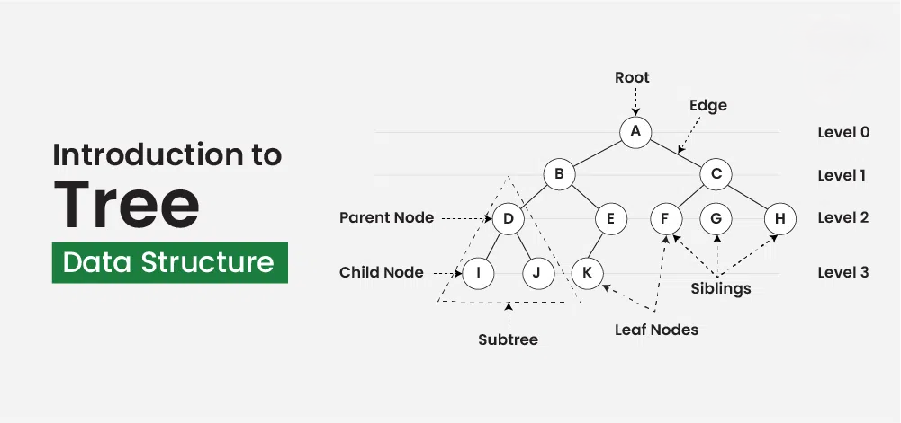
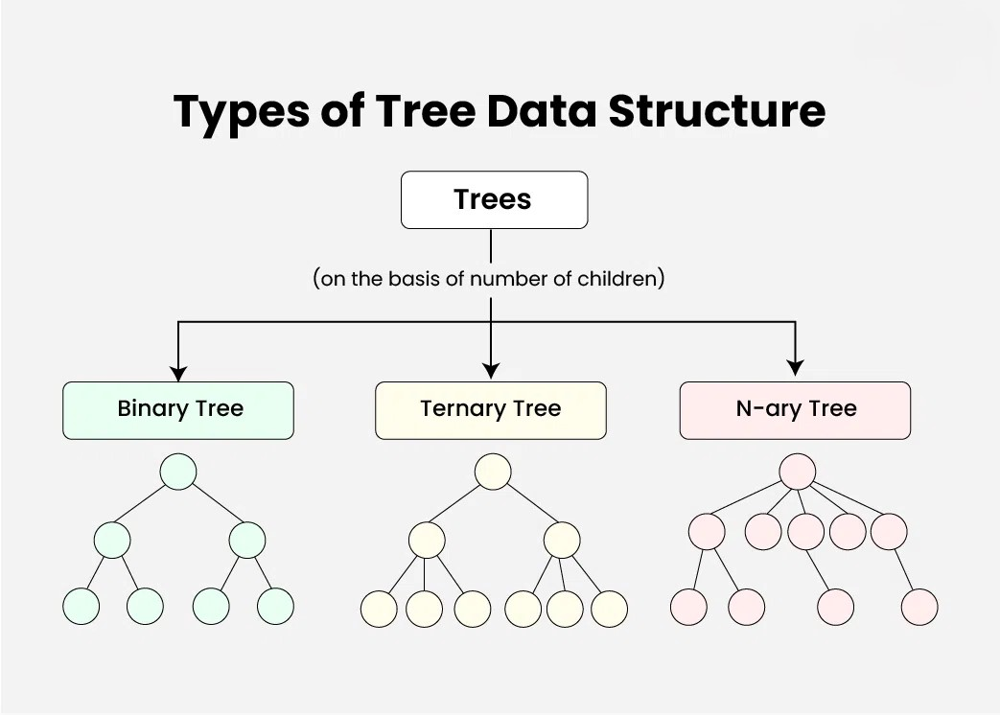

What is a Tree?
A Tree is a non-linear data structure that represents a hierarchy of elements. Each element in a tree is called a node, and nodes are connected by edges. Trees are used to represent hierarchical relationships, such as a file system or organizational structure.
A tree consists of a root node and children. Each node in the tree can have zero or more child nodes, and the root node is the topmost node with no parent.
Basic Terminology in Trees
- Node: The fundamental component of a tree that contains data and may have child nodes.
- Root: The topmost node of the tree with no parent.
- Edge: The connection between two nodes.
- Leaf: A node with no children.
- Parent: A node that has one or more child nodes.
- Child: A node that is a descendant of another node.
- Subtree: A portion of the tree that consists of a node and its descendants.

Types of Trees
There are various types of trees, each with specific properties and applications:
- Binary Tree: A tree where each node has at most two children (left and right).
- Binary Search Tree (BST): A binary tree in which the left child contains values less than the parent node, and the right child contains values greater than the parent node.
- AVL Tree: A self-balancing binary search tree where the difference in heights of the left and right subtrees is no more than one for any node.
- Heap: A special type of binary tree where the parent node is either greater than (max heap) or smaller than (min heap) its children.
- B-Tree: A self-balancing tree data structure that maintains sorted data and allows searches, insertions, deletions, and sequential access in logarithmic time.

Basic Structure of a Node
The basic structure of a tree node can vary based on the type of tree. Below is an example of a node structure for a binary tree in C:
struct Node {
int data;
struct Node* left;
struct Node* right;
};
In this structure, data holds the value stored in the node, and left and right are pointers to the left and right child nodes, respectively.
How Trees Work
In a tree, the root node is the topmost node, and each child of a node is connected by edges. Here's how basic operations work in trees:
- Insertion: A new node can be inserted based on tree-specific rules. For instance, in a binary search tree, the value is inserted in the left or right subtree based on its value.
- Deletion: Deleting a node involves reconnecting its children and maintaining the structure of the tree.
- Traversal: Traversing a tree means visiting each node in a specific order. Common traversal methods are in-order, pre-order, and post-order.
Common Operations in Trees
Some common operations performed on trees include:
- Insertion: Inserting a node based on the tree type.
- Deletion: Removing a node while maintaining the tree structure.
- Traversal: Visiting nodes in a specific order (e.g., in-order, pre-order, post-order).
- Searching: Searching for a node based on its value.
- Balancing: Keeping the tree balanced for efficient operations (e.g., AVL trees).
Applications of Trees
Trees are widely used in various applications due to their hierarchical structure. Some common applications include:
- Binary Search Trees: Used to implement fast search algorithms in databases.
- File Systems: Trees are used to represent the hierarchical structure of directories in a file system.
- Heaps: Used in priority queues and algorithms like Dijkstra’s shortest path algorithm.
- Expression Trees: Used in compilers to represent expressions and parse syntax.
- Routing Algorithms: Trees are used to find paths in network routing protocols.